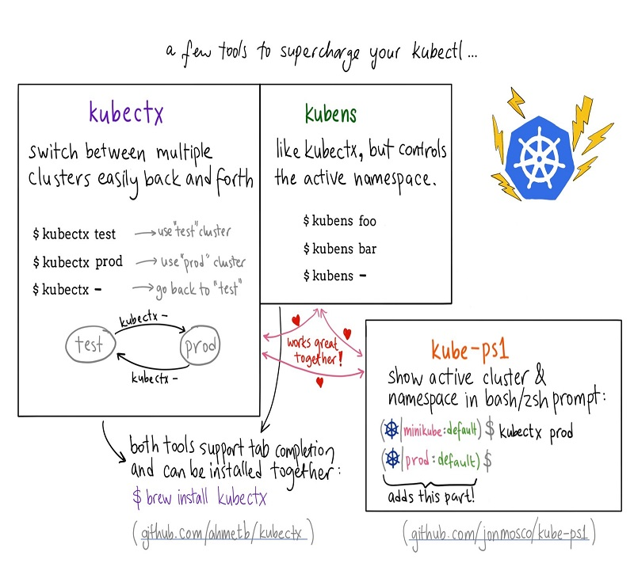
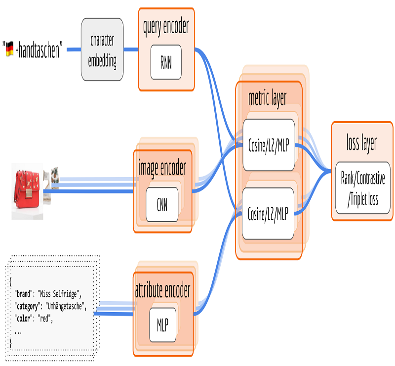
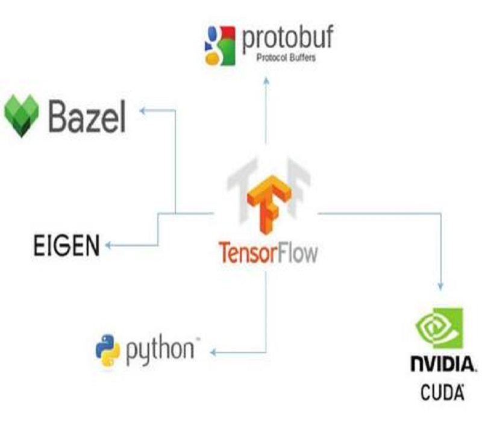
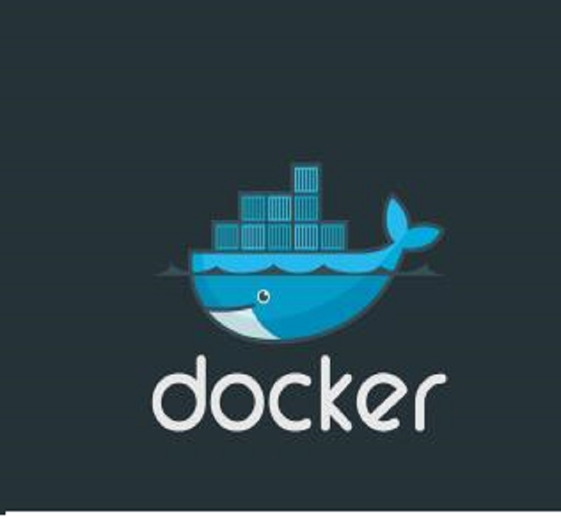
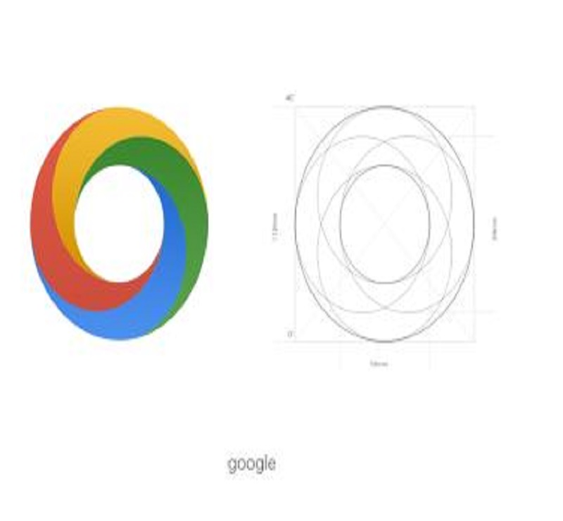

[DIGITS Getting Started Tensorflow] 目录 在DIGITS中启用对TensorFlow的支持 在DIGITS中创建模型时选择TensorFlow 在DIGITS中定义TensorFlow模型 提供属性 内部属性 Tensors DIGITS的其他Tensorflow工具
帮助函数 在Tensorboard中进行可视化 例子
简单自动编码网络 通过重命名冻结预训练模型中的变量 多GPU训练 安装DIGITS及Tensorflow
在DIGITS中启用对TensorFlow的支持 如果Tesnorflow-gpu被安装到系统，DIGITS将会自动支持Tensorflow，通过import tensorflow看是否实际导入
如果DIGITS不支持tensorflow将会打印出TensorFlow support is disabled
在DIGITS中建立模型的时候选择Tensorflow 在模型建立页，点击”Tensorflow”
[图片-使用TensorFlow建立模型 —来自于DIGITS]
在DIGITS中定义TensorFlow模型 未来定义一个Tensorflow模型在DIGITS，你需要写一个python类遵循以下模板
class UserModel(Tower): @model_propertyOther TensorFlow Tools in DIGITS def inference(self): # Your code here return model @model_property#with tf.variable_scope(digits.GraphKeys.MODEL, reuse=None): def loss(self): # Your code here return loss 就像LeNet-5模型,由Yann Lecn创造的对数字进行识别分类的模型
[Kubeflow] Kubeflow Components 在Github repository的kubeflow/components/
1. TF Job Operator and Controll 对Kubernetes的扩展，以简化分布式的TensorFlow工作负载的部署。通过使用操作符，Kubeflow能够自动配置主、worker和参数化的服务器配置。工作负载可以用TFJob部署。
2. TF Hub 使用Jupyter Notebook运行JupyterHub实例
3. Model Server 为客户部署一个经过训练的TensorFlow模型，以获取和使用未来的预测
1. TF Job #获得组件列表,三大组件 ls -lha kubeflow/components/drwxr-xr-x 5 root root 4.0K Jan 4 08:32 . drwxr-xr-x 5 root root 4.0K Jan 4 08:32 .. drwxr-xr-x 4 root root 4.0K Jan 4 08:32 jupyterhub drwxr-xr-x 4 root root 4.0K Jan 4 08:32 k8s-model-server drwxr-xr-x 2 root root 4.0K Jan 4 08:32 tf-controller#将其所有部署到Kubernetes kubectl apply -f kubeflow/components/ -Rconfigmap "jupyterhub-config" created service "tf-hub-0" created statefulset "tf-hub" created role "edit-pod" created rolebinding "edit-pods" created service "tf-hub-lb" created deployment "model-server" created service "model-service" created configmap "tf-job-operator-config" created serviceaccount "tf-job-operator" created clusterrole "tf-job-operator" created clusterrolebinding "tf-job-operator" created deployment "tf-job-operator" created#部署之后，可以发现额外的pod和服务已经在运行，处理kubeflow和Tensorflow工作负载 kubectl get allNAME DESIRED CURRENT UP-TO-DATE AVAILABLE AGE deploy/model-server 3 3 3 3 5m deploy/tf-job-operator 1 1 1 1 5m NAME DESIRED CURRENT READY AGE rs/model-server-584cf76db9 3 3 3 5m rs/tf-job-operator-6f7ccdfd4d 1 1 1 5m NAME DESIRED CURRENT UP-TO-DATE AVAILABLE AGE deploy/model-server 3 3 3 3 5m deploy/tf-job-operator 1 1 1 1 5m NAME DESIRED CURRENT AGE statefulsets/tf-hub 1 1 5m NAME DESIRED CURRENT READY AGE rs/model-server-584cf76db9 3 3 3 5m rs/tf-job-operator-6f7ccdfd4d 1 1 1 5m NAME READY STATUS RESTARTS AGE po/model-server-584cf76db9-44ktg 1/1 Running 0 5m po/model-server-584cf76db9-68h7f 1/1 Running 0 5m po/model-server-584cf76db9-l7k4q 1/1 Running 0 5m po/tf-hub-0 1/1 Running 0 5m po/tf-job-operator-6f7ccdfd4d-knhvq 1/1 Running 0 5m example

[Kubernetes的一些实用工具] 1.Kubectl工具 [图片-Kubectl增强工具 —来自于网络]
kubectx：用于切换kubernetes context kube-ps1：为命令行终端增加$PROMPT字段 kube-shell：交互式带命令提示的kubectl终端 kube-shell 特别推荐开源项目kube-shell可以为kubectl提供自动的命令提示和补全
Kube-shell有以下特性：
命令提示，给出命令的使用说明 自动补全，列出可选命令并可以通过tab键自动补全，支持模糊搜索 高亮 使用tab键可以列出可选的对象 vim模式 安装:
$ pip install kube-shell --user -U 安装遇到问题:
#提示报警说python2的低版本不支持kube-shell #更新python为3.6.1 #安装目录为~/home/xyd/export/software/ $ wget https://www.python.org/ftp/python/3.6.1/Python-3.6.1.tar.xz $ xz -d Python-3.6.1.tar.xz $ tar xvf Python-3.6.1.tar #编译并安装 $ mkdir /usr/local/python3 $ cd Python-3.6.1 $ sudo ./configure --prefix=/usr/local/python3 --enable-optimizations #发现报错,没有安装GCC套件 configure: error: in `/root/expert/software/Python-3.6.1':configure: error: no acceptable C compiler found in $PATHSee `config.log' for more details $ yum install gcc #重新运行 $ sudo .

[使用Tensorflow构造跨语言端对端商品搜索] Translator form Han Xiao`s Blog
背景 商品搜索是网上零售商店的重要组成部分。从本质上说，您需要一个与文本查询(查询存储在您的商店中的产品)相匹配的系统。一个好的产品搜索可以理解用户的查询，检索尽可能多的相关产品，并最终将结果显示为一个列表，其中首选的产品应该位于顶部，而不相关的产品应该位于底部。
不像文本检索(如Google web搜索)，产品是结构化数据。一种产品通常由一组键值对、一组图片和一些自由文本来描述。在开发者的世界Apache Solr和Elasticsearch被称为全文搜索的实际上的解决方案，使它们成为构建电子商务产品搜索的最有力竞争者。
solr/Elasticsearch 核心上是一种符号信息检索(symbolic information retrieval)系统。将查询和文档映射到公共字符串空间对于搜索质量至关重要。这个映射过程是由一个由Lucene Analyzer实现的NLP Pipeline.在这篇文章中，我将介绍这种象征性管道方法的一些缺点，然后介绍使用Tensorflow从查询日志中构建产品搜索系统的端到端方法。这种基于深度学习的系统不太容易出现拼写错误，更有效地利用底层语义，并且更容易扩展到多种语言。 - 回顾产品搜索的符号方法 - 指出符号信息检索的痛点 - 神经信息检索系统 - 符号 vs 神经信息检索系统 - 神经网络架构 - 训练和评估方案 - 定性分析结果 - 总结
回顾产品搜索的符号方法 我们首先回顾一下传统的方法。一个信息检索系统可以分为3个任务:索引、解析、匹配。下面是一个简单的产品搜索系统:
[图片-产品搜索系统]
1.indexing:将产品存储在具有属性的数据库中，如:品牌、颜色、类别 2.pasing:从输入查询中提取属性项，例如红衬衫 - > {“颜色”：“红”，“类别”：“衬衫”}; 3.matching:根据属性过滤产品数据库
如果查询中没有找到属性，那么系统就会返回到精确的字符串匹配;例如:在数据库中搜索所有可能发生的事件。注意，对于每个传入的查询，都必须进行解析和匹配，而索引可以根据库存更新速度来减少。许多现有的解决方案，如Apache Solr和Elasticsearch都遵循这个简单的方法，除了他们为这三个任务使用了更复杂的算法(如Lucene)。得益于这些开源项目，许多电子商务企业能够自己构建产品搜索，并为客户提供数以百万计的请求。
符号信息检索 注意，在本质上，solr/Elasticsearch 是一个符号信息检索系统，它依赖于查询和产品的有效字符串表示。通过解析或索引，系统知道查询或产品描述中的哪些令牌是重要的。这些令牌是用于匹配的原始构建块。从原始文本中提取重要的令牌通常由Lucene Analyzer实现，它由一系列NLP组件组成，例如:标记化、引理、拼写校正、名称/同义词替换、命名实体识别和查询扩展。
一般给定一个查询q∈Q以及p∈P,可以将Lucene Analyzer看做一个预定的函数将Q或P映射到一个空间S，例如f:Q -> S 或者 g:P -> S 。对于一个匹配任务，我们需要一个度量: S x S -> [0,正无穷)，然后求m(f(q)，g(p))，如下图所示:

[部署TensorFlow模型] 来自于Vitaly Bezgachev
1.第一部分:准备模型 Tensorflow是为生产而生，所以Tensorflow提供解决方案Tensorflow Serving,基本流程，创建模型 -> 本地测试 -> 创建web服务 -> 使用web服务创建部署容器 -> 测试容器 ->放入生产，具体步骤如下: - 使用TensorFlow创建模型 - 使用Docker来镜像化 - 使用TensorFlow Serving托管模型 - 部署到生产环境的Kubernetes
这里使用Udacity深度学习基础课程中的GAN Model for Semi-Supervised learning,这里我们将做以下几个方面: - 在The Street View House Numbers (SVHN) Dataset数据集上训练GAN Model for Semi-Supervised - 使用GAN discriminator预测门牌号，即0-9的数对应的分数 - 将Tensorflow构建的模型集成到Docker容器中 - 创建客户端，提交数字照片 - 部署到云上
基于Jupyter notebook，将功能集成到python文件里:测试保存的模型、模型的输出(使用Protobuf格式)、客户端的服务请求，具体细节见
Tensorflow Serving 实现GRPC接口，所以不能直接发送请求，而是创建一个通过GRPC通信的客户端 TensorFlow Serving 已经提供将模型转换成Protobuf的操作 也可以创建自己的模型转换格式实现将其转换成其他格式，但是grpc很快 Tensorflow Serving提供类为SavedModelBuilder
这个模型的输入为(batch_num,width,height,channels)的张量图片为32x32x3且像素点缩放到(-1,1);服务必须接受JPEG图像
#图像转换 #序列化传入图像占位符 serialized_tf_example = tf.

[Docker] 1. 部署第一个容器 以运行redis容器为例,作为数据库，需要持续的运行
$ docker search redis #在background运行3.2版本 $ docker run -d redis:3.2 # $ docker ps CONTAINER ID IMAGE COMMAND CREATED STATUS PORTS NAMES bcfa0307fe3b redis "docker-entrypoint..." 19 seconds ago Up 19 seconds 6379/tcp flamboyant_pasteur $ docker inspect bcfa0307fe3b #或者name $ docker logs bcfa0307fe3b [ { "Id": "bcfa0307fe3b5287e05cec154ac557be067d3cec7fa26c502fe59fad8a55d66a", "Created": "2018-01-04T13:12:19.047437762Z", "Path": "docker-entrypoint.sh", "Args": [ "redis-server" ], "State": { "Status": "running", "Running": true, "Paused": false, "Restarting": false, "OOMKilled": false, "Dead": false, "Pid": 445, "ExitCode": 0, "Error": "", "StartedAt": "2018-01-04T13:12:19.

[Machine Learning + Kubernetes = ?] Translate from Michael Hausenblas`s Blog
Machine Learning 公共云服务商 Machine Learning on AWS Azure Machine Learning Studio Google Cloud AI aliyun Caicloud 开源解决方案(不限于) R—the data scientist’s go-to workhorse 基于Python的scikit-learn、PyTorch、Numpy、pandas、and Jupyter Notebook 基于Java的机器学习系统例如：Apache Spark的MLlib和FlinkML 基于C的Tensorflow,在Github上以极快的速度上升，在2015年被Google开源。 在进行机器学习的时候会遇到什么问题? 当你在笔记本上进行机器学习，不可避免的需要分布式处理，这就意味着需要类似于GPGPUs、FPGAs这些硬件进行并行计算。但是对于一个开发人员或者数据科学家，深入了解分布式操作系统是很难的，当然现在有一些云提供这样的的环境，但是这样会将我们局限其中。
Kubernetes 我的笔记 Kubenetes-frame
Kuberbnetes特征 Kubernetes可以很容易地在一组服务器上以标准化的方式运行几乎任何编程语言编写的应用程序。在标准化的情况下，我的意思是，应用程序的打包、部署和操作在不同的环境下都有良好的定义和可移植性——不管你是在你的笔记本上运行一个应用，还是在公共云环境中运行。另外，Kubernetes的架构是模块化和可扩展的。
公有云支持Kubernetes
Google Kubernetes Engine Azure Container Service Amazon Elastic Container Service for Kubernetes (preview) 阿里容器服务 Kubernetes版(公测中) Caicloud OpenShift Everyone who’s into ML can confirm that north of 70% of the hard work actually is around cleaning up the data.
CNCF云原生应用的三大特性: 1. 容器化包装：软件的应用进程需要包装在容器内独立运行 2. 动态管理: 通过集中式的调度编排系统来动态管理和调度 3. 微服务化 :明确服务之间的依赖，相互解耦
[图片-Kubernetes架构 —来自于jimmysong.io]
Kuberneres核心组件: 1. etcd:保存整个集群的状态 2. kube-apiserver:资源调度的唯一入口，提供认证、授权、限制、API注册和发现机制 3.
T-SNE 什么是T-SNE？ 全名: t分布随机邻域嵌入
应用: 将多个维度映射到适合人类观察的二维或者多个维度 T-SNE API TSNE(n_components=2, perplexity=30.0, early_exaggeration=12.0, learning_rate=200.0, n_iter=1000, n_iter_without_progress=300, min_grad_norm=1e-07, metric=’euclidean’, init=’random’, verbose=0, random_state=None, method=’barnes_hut’, angle=0.5) Parameters Description n_components 嵌入空间的维度 默认:2(int) perplexity 大数据集需要的更大(Not Important) 默认:30 范围:5-50(float) early_exaggeration 控制集群在空间中的紧密程度(Not Important) 默认:12(float) learning_rate 学习速率过高可能会造成数据看起来像个球，过低会造成大多数点被压缩在一起；如果成本函数被卡在局部最小值，可以适当增大速率 默认:200 范围:[10.0:1000.0] n_iter 最大循环次数 默认:1000(int) 最小250 n_iter_without_progress 相当于EarlyStop即不再优化的轮数 在250轮后才使用且每50次迭代检查一次 默认:300(int) min_grad_norm 梯度小于这个值将停止优化 默认:1e-7(float) metric string(scipy.
新一年的开始… 新的一年要做的事情(最重要的事放最后面…) 学习Kubernetes及云原生的基础知识 继续完善全矢CNN模型 着手学习deeplearning.ai的LSTM模型，并上手文本匹配框架MatchZoo 深化对Tensorflow以及Kreas的理解和应用，尤其是Tensorflow对移动端的支持即Tensorflow Lite以及其对于Apple MLCore的支持 尝试将Kubeflow在Kubernetes环境中搭建，并运行模型 发表小论文以及着手准备大论文 强化对Java和Python语言的理解… 健身、健身、健身…… 2018最重要的就是和张哈哈把小窝搭起来，haha…